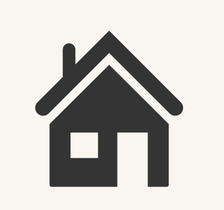
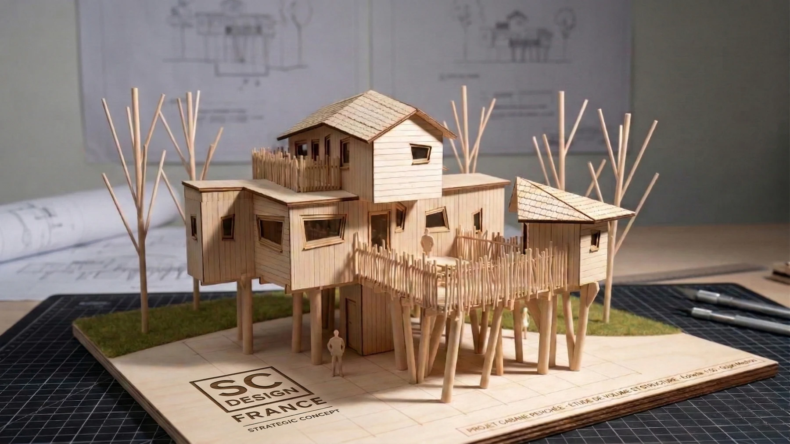
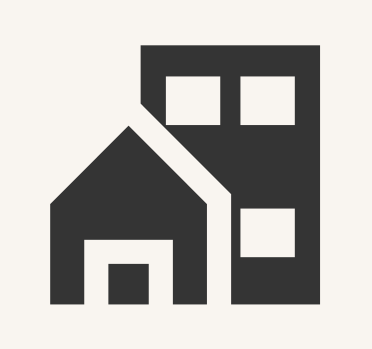
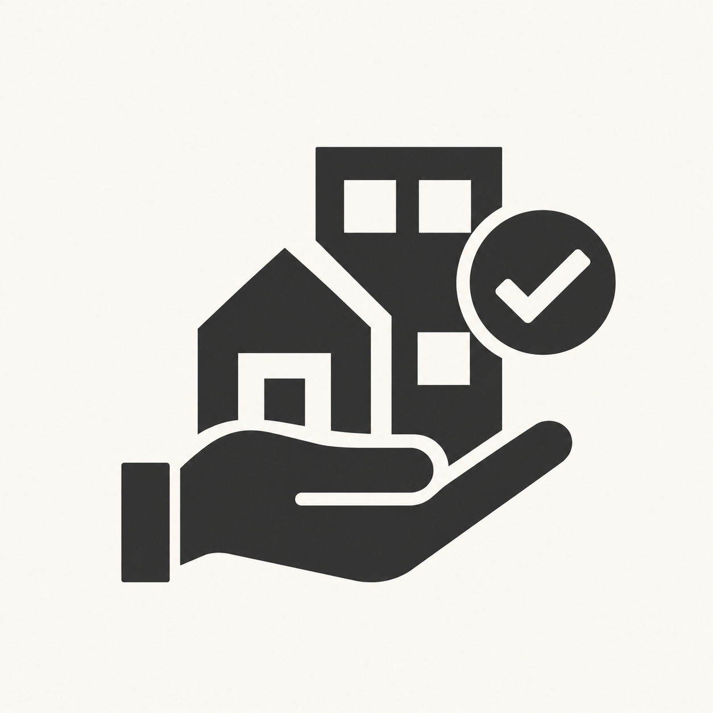
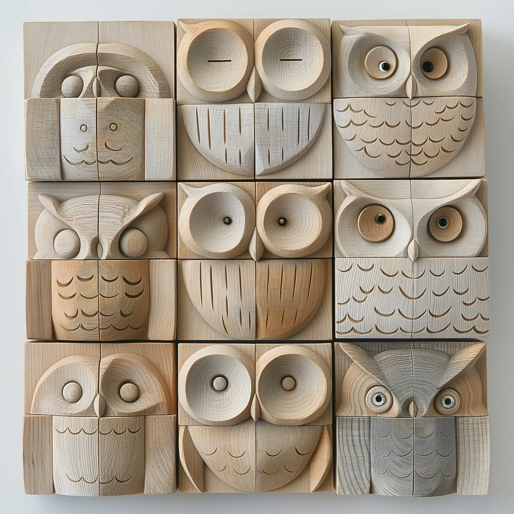
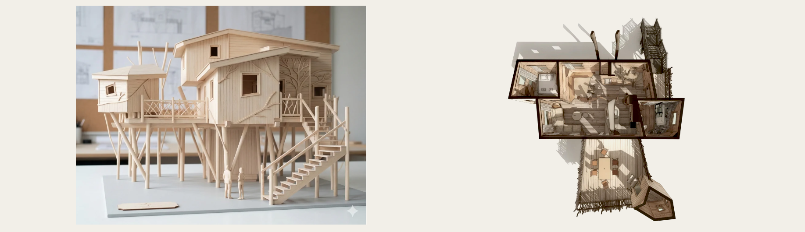
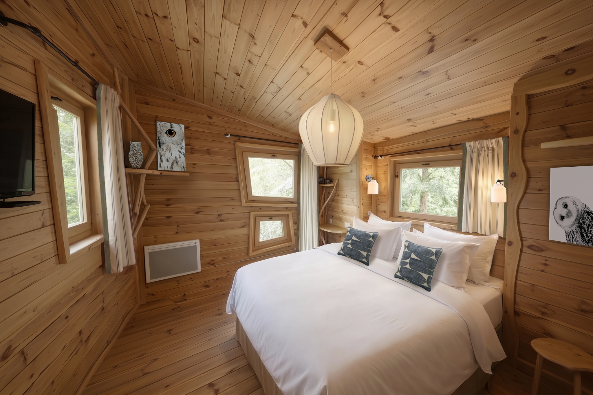

Comprendre le potentiel
Étudier le lieu, les attentes des publics et les contraintes d’exploitation. Clarifier les objectifs, les priorités et les conditions de faisabilité.
Diagnostic · Usages · Orientations
Design Management & Hospitality
De l’intuition au lieu de vie, nous relions stratégie, design et expérience client pour créer des espaces à forte identité, utiles et durables.
Découvrir notre accompagnement ↓
Notre conviction
L’identité d’un lieu naît de la rencontre entre une histoire, des usages et une réalité économique.
Nous aidons les propriétaires, investisseurs et exploitants à transformer une intention en projet concret. Chaque décision d’aménagement doit servir le plaisir d’y séjourner, la qualité d’usage et le fonctionnement quotidien du lieu.
Notre rôle : donner une direction claire au projet, fédérer les compétences et maintenir la cohérence entre le concept et sa réalisation.
Du concept à sa mise en œuvre
Une intervention globale ou ciblée, en création comme en rénovation, adaptée à votre organisation, à votre budget et à vos délais.

Étudier le lieu, les attentes des publics et les contraintes d’exploitation. Clarifier les objectifs, les priorités et les conditions de faisabilité.
Diagnostic · Usages · Orientations

Donner au lieu une identité et un programme. Relier positionnement, parcours client, ambiances et services pour construire une expérience cohérente.
Positionnement · Programmation · Cahier des charges
Traduire le concept en choix d’aménagement. Coordonner les concepteurs et partenaires, comparer les options et accompagner les arbitrages de budget et de qualité.
Briefs · Design intérieur · Visualisation 3D

Préserver l’intention du projet dans sa mise en œuvre. Faciliter les échanges, suivre les choix de matériaux et de mobilier et accompagner le déploiement du concept, selon la mission confiée.
Coordination · Cohérence · Accompagnement

L’identité jusque dans le détail
Volumes, lumière, matériaux, couleurs, mobilier : nous composons un langage commun aux différents espaces. Les ambiances prolongent le positionnement du lieu et rendent son identité tangible.
Cette exigence se confronte aux usages réels : confort, circulation, entretien, durabilité et contraintes d’exploitation.
Hôtels · Résidences de tourisme · Villages vacances · Restaurants · Parcs de loisirs · Espaces de travail
De l’idée à l’espace
Maquettes, vues 3D et recherches d’ambiances permettent de partager une intention, d’explorer les usages et de décider ensemble.


Vos interlocuteurs
Sonia Chassint et Fabrice Imbrosciano associent leurs compétences en architecture d’intérieur, stratégie et design management. Un réseau de partenaires se mobilise selon les besoins de chaque mission.
Architecture d’intérieur · Design Management
La cohérence des espaces, des ambiances et des choix d’aménagement.
Découvrir Sonia Chassint ↗Conseil stratégique · AMO · Design Management
Une vision transversale du lieu, de ses usages et de sa transformation.
Découvrir Fabrice Imbrosciano ↗Votre prochain lieu
Partageons vos ambitions et les premières questions de votre projet pour définir l’accompagnement qui vous sera utile.
Parlons de votre projet